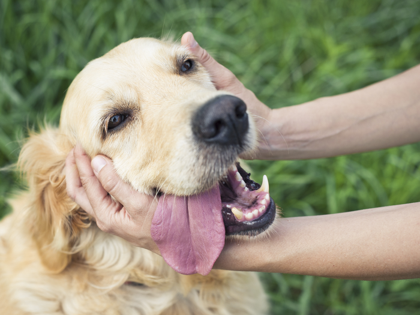
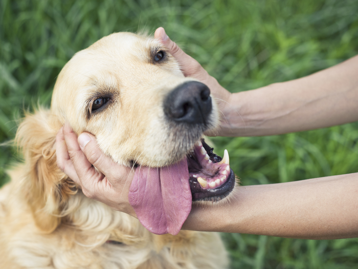
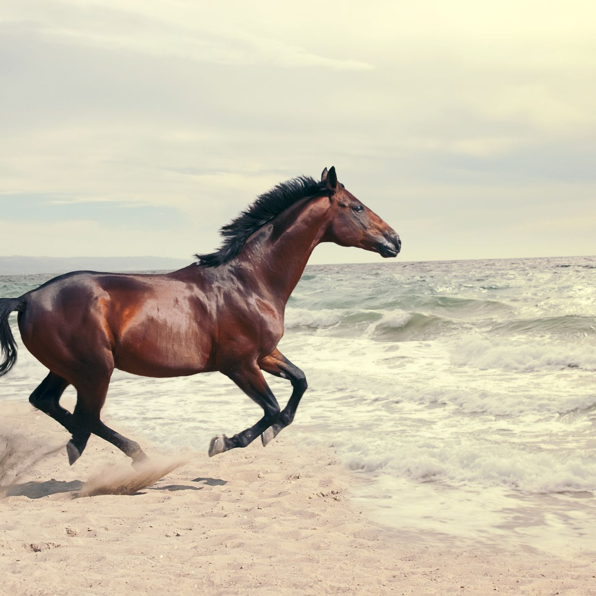
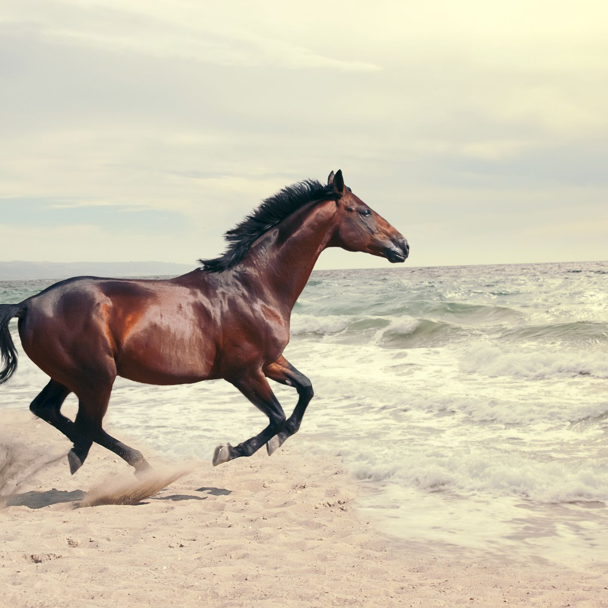

Say a name of the object to see the object on the screen."
1.Monkey 2.Dog 3.Cat 4.Horse 5.Sheep 6.Duck
Say "Help" to tell them "Say a name of the object on the screen. Say about, to hear about the program." This will use Text to Speech to play back the help instructions.
Say "About" to hear your name and Copyright with this year. This will use Text to Speech to play back the help instructions.
 

 
